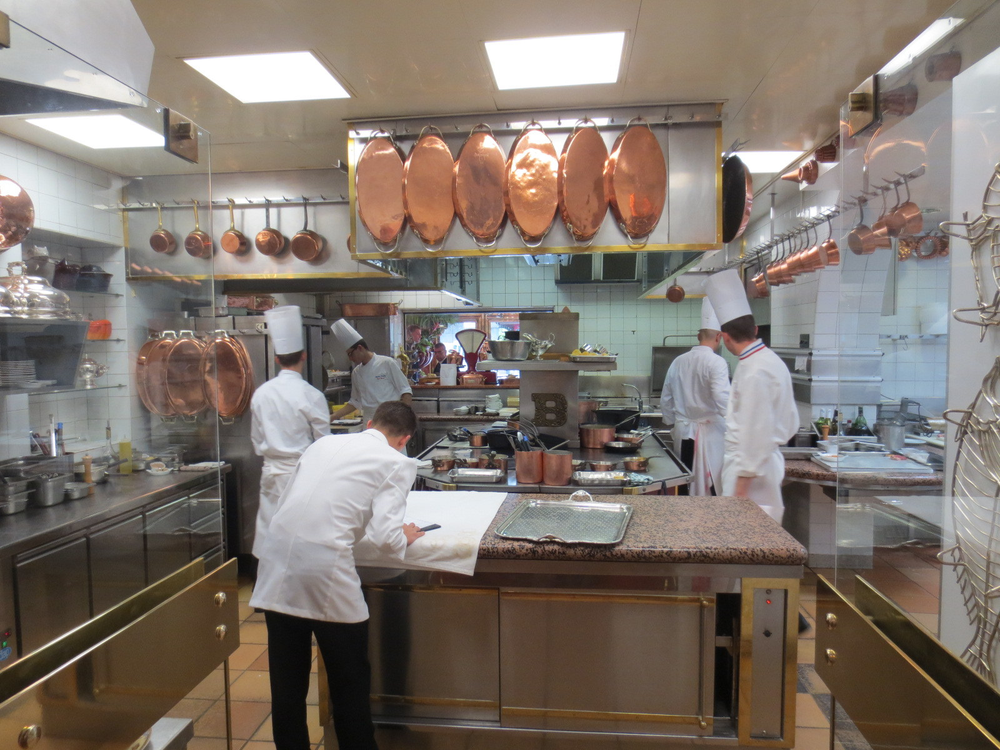

Anglais · CAP et baccalauréat professionnel · A2 et B1
S'exprimer en anglais sur le lieu de travail
Speaking English at work: PFMP, workshop, customers

Une fiche de vocabulaire, à elle seule, ne prépare pas un élève de lycée professionnel à parler anglais sur un lieu de travail. Cette séquence propose une mise en situation complète, portée par un scénario professionnel réaliste, une œuvre d'art comme amorce et comme fil, un travail régulier des cinq activités langagières du Bulletin officiel, et une tâche finale évaluable, proche des situations de CCF.
Sur le lieu de travail
Trois lieux réels, pour entrer dans la séquence : un atelier, un chantier, une cuisine professionnelle.

Fiche d'identité
| Public | Élèves de CAP et de baccalauréat professionnel, toutes filières, niveaux A2 à B1 du CECRL. Dans une même leçon, les activités sont communes. Les textes, le volume à produire et le degré d'étayage sont différenciés. |
|---|---|
| Durée | Huit leçons de 55 minutes. L'évaluation écrite de la tâche finale peut, si l'enseignant le souhaite, être passée dans un temps séparé de 20 à 25 minutes. |
| Programme | Programmes d'enseignement de langues vivantes des classes préparant au certificat d'aptitude professionnelle et des classes de seconde, première et terminale professionnelles. Arrêté du 3 avril 2019, Bulletin officiel spécial n° 5 du 11 avril 2019. |
| Fil visuel | Une œuvre de Laurent Proux, peintre contemporain français du monde du travail, représentant de jeunes personnes et des adultes au travail dans un atelier scolaire, avec des cartons et des établis devant de grandes fenêtres. Pas de titre inventé. |
| Auteure | Madame Carole Paoli Pompougnac, professeure d'anglais et de français en lycée professionnel. |
Les consignes destinées à l'enseignant sont en français. Les consignes, textes, dialogues et traces destinés aux élèves sont en anglais.
Les cinq activités langagières
Le programme de langues vivantes de la voie professionnelle (2019) fixe une approche actionnelle : l'élève est un usager de la langue, engagé dans une tâche de communication. Il vise le niveau A2 en CAP et le niveau B1 en baccalauréat professionnel. Cette séquence travaille les cinq activités langagières prévues par le Bulletin officiel. Chaque leçon annonce les activités qu'elle entraîne. L'ensemble de la séquence, y compris la tâche finale, les couvre toutes.
L'œuvre de Laurent Proux
Laurent Proux est un peintre contemporain français du monde du travail. L'œuvre retenue pour cette séquence représente de jeunes personnes et des adultes qui travaillent dans un atelier scolaire. On y voit des cartons et des établis, devant de grandes fenêtres.
Ce que l'on peut dire, parce que cela se voit : de jeunes personnes et des adultes sont au travail dans un atelier scolaire. Il y a des établis. Il y a des cartons. Il y a de grandes fenêtres.
Ce que l'on ne dit pas comme un fait : le titre de l'œuvre (il n'est pas donné dans cette séquence, et l'on n'en invente pas), le nom des personnes, ce qu'elles fabriquent exactement, le contenu précis des cartons, leurs paroles, leurs pensées, leur métier exact. Tout cela appartient à l'hypothèse, clairement présentée comme telle.
L'œuvre ouvre la leçon 1 : décrire, émettre des hypothèses, se demander qui sont ces personnes, ce qu'elles fabriquent, ce qu'elles se diraient. Elle revient ensuite à chaque leçon, quelques minutes, comme un lieu familier : un salut, une action en present continuous, une consigne, une règle de sécurité, un carton abîmé, l'arrivée d'un client, le décor de la tâche finale. Les élèves ne « font pas de l'art » à la place de l'anglais. Ils parlent anglais à partir d'une image juste, riche, et proche de leur atelier.
Le scénario
Le lycée va recevoir un visiteur anglophone dans l'atelier (un client, un technicien partenaire, ou un nouveau collègue). En même temps, les élèves préparent leur PFMP ou viennent d'en revenir. Tout au long de la séquence, ils se préparent à trois prises de parole réelles :
- accueillir quelqu'un dans l'atelier et expliquer ce qui s'y passe ;
- donner une consigne, rappeler une règle de sécurité, signaler un problème et proposer une solution ;
- parler au tuteur de PFMP et rendre compte, à l'oral et à l'écrit, d'une tâche accomplie.
L'atelier du tableau de Laurent Proux est le décor de référence. Les élèves peuvent, le moment venu, transposer ce décor à leur propre lieu de formation : atelier de maintenance, ligne de production, chantier, magasin, cuisine ou salle de restaurant.
Adaptation aux métiers
Le scénario reste le même. On change le lexique, quelques objets, et le profil du visiteur. Les dialogues modèles de chaque leçon proposent une version « atelier » et, en variante, une version métier. L'enseignant choisit la variante dominante de la classe, tout en gardant le cœur commun : salutations, consignes, sécurité, problème, client, tuteur, PFMP. Dans une classe aux métiers mélangés, on peut constituer des binômes par famille de métiers pour les jeux de rôle, et conserver les activités collectives sur l'œuvre et sur la grammaire.
- Maintenance et métiers industriels. Le visiteur est un technicien ou un client d'une entreprise partenaire. On explique une réparation, une vérification, une pièce, une machine à arrêter avant toute intervention.
- Bâtiment. Le visiteur est un client ou un chef de chantier anglophone. On explique une tâche sur le chantier, une règle de sécurité (casque, chaussures), un retard et une solution.
- Vente et accueil. Le visiteur est un client. On accueille, on présente un produit ou une commande, on traite un problème (carton abîmé, taille, échange) avec politesse.
- Restauration. Le visiteur est un client ou un nouveau collègue. On accueille, on explique une tâche en cuisine ou en salle, une règle d'hygiène, un problème de commande et la solution.
Objectifs langagiers
Fonctions de communication
Saluer et se présenter sur un lieu de travail. Présenter un collègue. Prendre congé. Demander et donner des consignes. Demander de répéter ou de clarifier. Nommer des outils et des matériaux. Rappeler une règle de sécurité. Signaler un problème. S'excuser. Proposer une solution. Faire une demande polie. Expliquer une tâche à un client. Parler à son tuteur de PFMP. Rendre compte d'une journée ou d'une tâche.
Lexique
Le lexique de l'atelier à partir de l'œuvre (workshop, workbench, cardboard box, window, young people, adults, to work, to make). Le lexique fonctionnel du quotidien professionnel (hello, good morning, please, thank you, I'm sorry, over there, at the moment). Le lexique spécialisé, au choix du métier, dans les banques Building your vocabulary et Expanding your vocabulary. Les mots de la sécurité. Les mots du compte rendu (task, problem, solution, I learned, I helped, I checked). Voir aussi les banques lexicales par métier.
Grammaire, toujours en contexte
- Leçon 1 et leçon 3 : present continuous (They are working. What is he doing?).
- Leçon 2 et leçon 7 : formes polies (Nice to meet you. Could you... ? I'd like to... Would you mind... ?).
- Leçon 4 : impératif et enchaînement d'une procédure (Put on your gloves. First, switch off the machine.).
- Leçon 5 : modaux must, have to, should, can, can't.
- Leçon 6 et leçon 7 : past simple pour raconter un problème et rendre compte d'une PFMP (The box arrived damaged. I checked the engine. We replaced the part.).
Phonologie
Intonation montante des salutations et des demandes polies. Forme faible de can (/kən/) dans Can you pass me... ? et forme pleine de can't. Must et mustn't. Terminaisons du past simple (/t/, /d/, /ɪd/). L'enseignant corrige surtout ce qui gêne la compréhension, et fait répéter les formules modèles à voix haute avant les jeux de rôle.
Les huit leçons
Huit leçons de 55 minutes, dans cet ordre. Le lexique et les structures sont recyclés d'une leçon à l'autre. La leçon 7 prépare la tâche finale. La leçon 8 la réalise à l'oral, à partir d'un écrit et d'un oral professionnel. Le compte rendu de PFMP en anglais, partie écrite de la tâche finale, est rédigé à la leçon 7 et peut être mis au propre à la maison ou dans un temps d'évaluation séparé.
| Lesson | Titre (élèves) | Activités langagières | Point de langue en contexte | Fil de l'œuvre |
|---|---|---|---|---|
| Lesson 1 | Looking at work | CE, EOC | present continuous pour décrire une scène | Découvrir l'œuvre, décrire, émettre des hypothèses |
| Lesson 2 | Hello, I work here | CO, IO | Formules de politesse, présentations | Imaginer le salut de deux personnes du tableau |
| Lesson 3 | What are they doing? | EOC, EE | present continuous et lexique des outils | Décrire les actions, rédiger une légende |
| Lesson 4 | Can you show me how? | CE, IO | Impératif, mots de déroulement (First, then, next, finally) | Imaginer une consigne donnée dans cet atelier |
| Lesson 5 | Safety first | CE, EOC | must, have to, should, can, can't | Quelles règles de sécurité dans cet atelier ? |
| Lesson 6 | There's a problem | CO, EE, IO | past simple pour raconter un incident | Un problème avec un carton, un établi, une tâche |
| Lesson 7 | Customers and tutors | CO, EOC, EE | Formules de politesse, past simple pour le bilan de PFMP | Un client entre dans l'atelier du tableau |
| Lesson 8 | Welcome to the workshop | CE, CO, EOC, IO (EE déjà engagée) | Réemploi de toute la langue de la séquence | L'œuvre est le décor de la tâche finale |
Tâche finale : Welcome to the workshop
(Variantes d'intitulé, selon le métier : Welcome to the site, Welcome to the shop, Welcome to the kitchen.)
Un visiteur anglophone arrive sur le lieu de travail (client, technicien, ou nouveau collègue, selon l'option choisie). L'élève le reçoit. Il s'appuie sur un courriel lu en classe (CE) et sur un message oral du tuteur (CO). Il prend la parole en continu, puis répond aux questions du visiteur (EOC et IO). Il a également rédigé un court compte rendu de PFMP en anglais (EE), préparé à la leçon 7.
À l'oral (4 minutes en A2, 5 à 6 minutes en B1), en binôme ou à trois
- Saluer le visiteur et se présenter (nom, rôle, lieu).
- Dire ce qui se passe dans l'atelier, en lien avec la scène de Laurent Proux si cela aide (present continuous).
- Expliquer une tâche (consignes claires, impératif ou you have to).
- Rappeler une règle de sécurité (must / have to / should / can't).
- Raconter un problème qui s'est produit et la solution trouvée (past simple).
- Répondre aux questions du visiteur, demander de répéter si besoin, rester poli.
À l'écrit
Un court compte rendu de PFMP en anglais, à la première personne : le lieu, le tuteur, les tâches accomplies, un problème et une solution, ce que l'élève a appris. Volume visé : 60 à 80 mots en A2 (CAP), 120 à 150 mots en B1 (bac pro). Ce n'est pas un document administratif français. C'est une prise de parole écrite professionnelle, évaluable en CCF.
Options selon les métiers
- Maintenance ou industriel. Vous recevez un technicien d'une entreprise partenaire. Vous lui montrez une machine. Vous expliquez une vérification ou une réparation. Vous rappelez qu'il faut arrêter la machine avant d'intervenir. Vous racontez une panne récente et ce que vous avez fait.
- Bâtiment. Vous recevez un client sur le chantier. Vous expliquez la tâche du jour. Vous rappelez le port du casque et des chaussures de sécurité. Vous expliquez un retard (la livraison, la pluie) et la solution.
- Vente et accueil. Vous recevez un client. Vous présentez un produit ou une commande. Vous traitez un problème (carton abîmé, article manquant, échange) et proposez une solution polie.
- Restauration. Vous recevez un client ou un nouveau collègue. Vous expliquez une tâche en cuisine ou en salle. Vous rappelez une règle d'hygiène. Vous racontez une erreur de commande et ce que vous avez fait.
Conditions de passation, utiles pour un CCF
- L'élève a droit à des notes courtes (mots-clés, pas de texte rédigé). En A2, une banque de mots peut rester visible.
- Le visiteur est l'enseignant, ou un camarade préparé, ou les deux (un camarade joue, l'enseignant pose une ou deux questions imprévues).
- Questions imprévues possibles, à choisir parmi celles-ci : Who is your tutor? What time do you start? Can I leave my bag here? What happens if there is a problem? What did you do yesterday? Can you say that again, please?
- La compréhension de l'écrit et la compréhension de l'oral de la leçon 8 font partie de la même situation : elles donnent à l'élève les informations dont il a besoin pour parler.
- L'écrit (compte rendu de PFMP) peut être recueilli à la leçon 7, rendu au propre avant la leçon 8, ou passé dans un temps d'évaluation écrit de 20 à 25 minutes.
- La grille d'évaluation porte sur les cinq activités langagières. Elle est conçue pour un usage CCF.
Évaluations et grille CCF
La grille porte sur les cinq activités langagières. Elle peut servir pour la situation de la leçon 8 (CE, CO, EOC, IO) et pour le compte rendu de PFMP (EE) rédigé à la leçon 7. Chaque activité est notée sur 4, pour un total sur 20. Les descripteurs existent en deux colonnes, CAP (A2) et baccalauréat professionnel (B1). On évalue selon le niveau visé de la classe, sans demander du B1 à un élève de CAP.
| Note /4 | Échelle |
|---|---|
| 4 | Très bonne maîtrise. L'élève satisfait pleinement au descripteur, avec aisance. |
| 3 | Maîtrise satisfaisante. L'élève satisfait au descripteur, avec quelques imperfections qui ne gênent pas la communication. |
| 2 | Maîtrise partielle. L'élève ne satisfait que partiellement au descripteur ; la communication passe par moments, avec des aides ou des lacunes. |
| 1 | Maîtrise insuffisante. L'élève ne satisfait pas au descripteur ; la communication est très limitée ou hors sujet. |
| 0 | Absence de production, ou production entièrement hors de la tâche. |
On n'utilise pas de demi-points si l'on veut un barème simple et défendable. Un commentaire qualitatif complète toujours la note. L'évaluation porte sur la communication réussie, pas sur l'absence totale d'erreurs. Une erreur de langue qui n'empêche pas de comprendre ne fait pas à elle seule baisser la note d'un cran.
La page de la grille donne les descripteurs A2 et B1 pour chaque activité, la fiche individuelle imprimable, et les repères de passation. Le document est aussi disponible en pdf, docx et odt ci-dessous.
Téléchargements
Chaque document existe en pdf, en Word (docx) et en OpenDocument (odt).
Documents élèves (textes, consignes, traces, tâche finale)
Guide enseignant (leçons, corrigés, scripts, pistes)
Version adaptée dys
Grille d'évaluation CCF, sur 20
Sur le site : version adaptée dys · guide enseignant · grille CCF · pistes autour de l'œuvre · banques lexicales par métier.
Mode d'emploi, en quatre gestes
- Afficher l'œuvre dès la leçon 1, sans titre inventé, et la faire revenir à chaque leçon.
- Tenir le scénario jusqu'au bout : un visiteur arrive, les élèves doivent pouvoir le recevoir, expliquer, rassurer, raconter.
- Faire copier la trace du cahier à chaque leçon : c'est la mémoire visible de la langue.
- Annoncer la tâche finale dès la leçon 2, en une phrase, puis détailler les critères à la leçon 7, et évaluer avec la grille CCF.
conçu par Madame Carole Paoli Pompougnac.
Voir aussi
Vingt dialogues filmés pour le CAP, le bac professionnel et le CFA : Trades in English. Cinq dialogues plus simples pour la 3e SEGPA : Trades in English, 3e SEGPA.